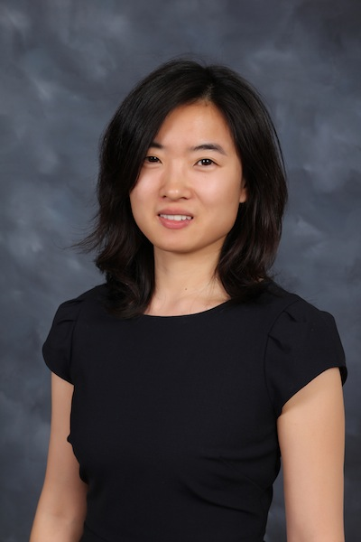

Biography
|  | Jing Yang Office: Room 311 Rice Hall |
I am an Associate Professor in the Department of Electrical and Computer Engineering at the University of Virginia, with a secondary appointment (by courtesy) in the Department of Computer Science. Previously, I was an Assistant and then tenured Associate Professor at the Pennsylvania State University. I received my B.S. from the University of Science and Technology of China (USTC), and M.S. and PhD degrees from the University of Maryland, College Park, all in Electrical Engineering.
My research interests lie in machine learning, wireless communications and networking, and information theory. Current research topics include:
Transformers and large language models (LLMs)
Multi-armed bandits and reinforcement learning
Privacy-preserving machine learning
Federated learning and distributed/decentralized learning
Machine learning for wireless communications and networking
Novel applications of artificial intelligence and machine learning
January 2025: Two papers are accepted to ICLR 2025, one paper is accepted to AISTATS 2025, and one paper is accepted to ICC 2025.
January 2025: Our project titled ‘‘Distributed Differentially Private Tabular Data Synthesis’’ is funded by UVA Commonwealth Cyber Initiative (CCI).
December 2024: I was elected to serve as a member on the IEEE SPS SPCOM Technical Committee.
December 2024: I received the 2024 IEEE TCCN Exemplary Editor Award.
September 2024: Four papers are accepted to NeurIPS 2024.
August 2024: Peng Wang joined our group as a PhD student. Welcome Peng!
June 2024: I was appointed as an Area Editor of IEEE Transactions on Green Communications and Networking.
May 2024: Two papers are accepted to ICML 2024 and one paper is accepted to ISIT 2024.
April 2024: Ruiquan received a Graduate School Endowed Fellowship from PSU as the sole recipient of College of Engineering. Congratulations, Ruiquan!
January 2024: Three papers are accepted to ICLR 2024.
Graduate Research Assistant positions are available for students in both the ECE and CS departments. I can advise students in either department, and prospective students with a strong mathematical background and/or extensive programming experience are encouraged to apply. If interested, please contact me by email with a resume, preferably including grades for math and major engineering courses.